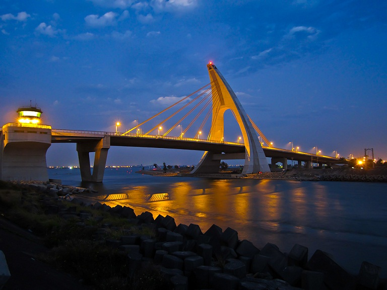
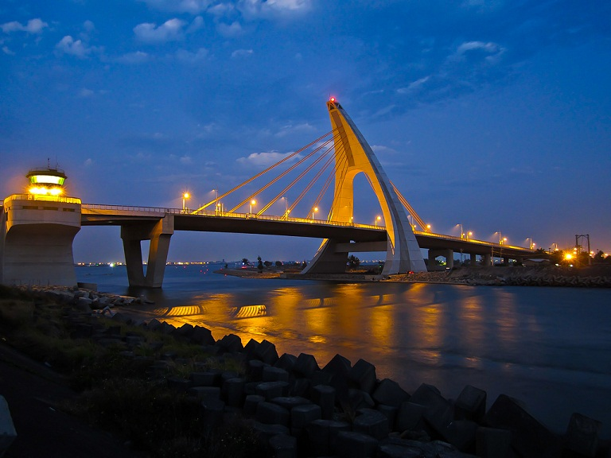

鵬灣跨海大橋是大鵬灣最美麗最獨特的新地標，橫跨於大鵬灣域出海口之上，是全國首座，也是目前唯一一座可以配合船舶進出而設計的開啟式景觀橋。
2011年3月正式通車啟用的鵬灣跨海大橋，擁有特殊三向度設計（有別於一般橋樑只有長與寬二個向度），
正面看如鵬鳥啣物，側看如船帆揚起，背面似英文字母大A，其造型採單塔非對稱單面複合式斜張橋。
全長579公尺，橋面寬30公尺，主塔頂至水面的高度達71公尺，橋面距水面則是17公尺高。活動橋面單向開啟75度仰角，跨距達20公尺。
單次上升橋面的時間僅需兩分鐘而已，放下時間亦同。船帆造型的橋樑除了傳遞海洋意象之外，夜間搭配燈光照明更出色顯眼，可比燈塔一樣成為海上船隻最溫暖的指引良伴。